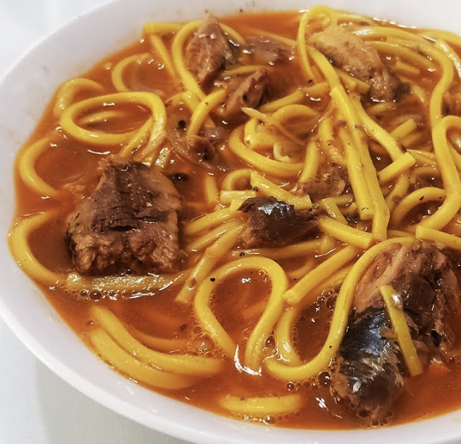

Odong

Description
With its quick preparation time and minimal ingredient requirements,
Odong is a great go-to dish that you can opt to prepare anytime at home.
Ingredients
- 4 20g odong noodles
- 2 cans of spicy sardines in tomato sauce
- 1 small onion, sliced
- 3 cloves garlic, crushed
- 2 cans of water (use sardines can)
- salt and pepper to taste
Steps
- Heat oil in a cooking pot.
- Once the oil is hot, sauté the garlic and onion until the onion softens.
- Add the sardines with their sauce and pour in water. Bring to a boil before adding the noodles.
- Cook the noodles for 5 to 8 minutes, or until they are tender.
- Add salt and pepper to taste, then stir.
Home